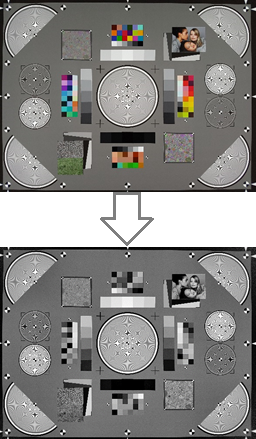
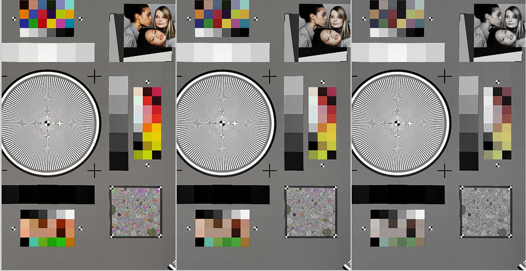
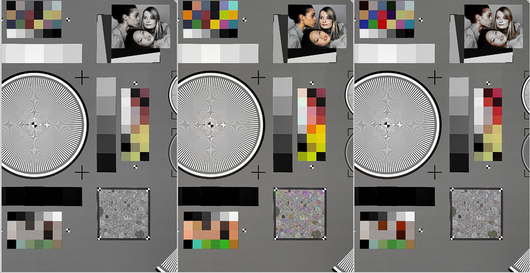
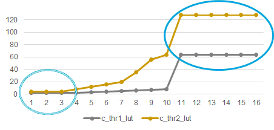
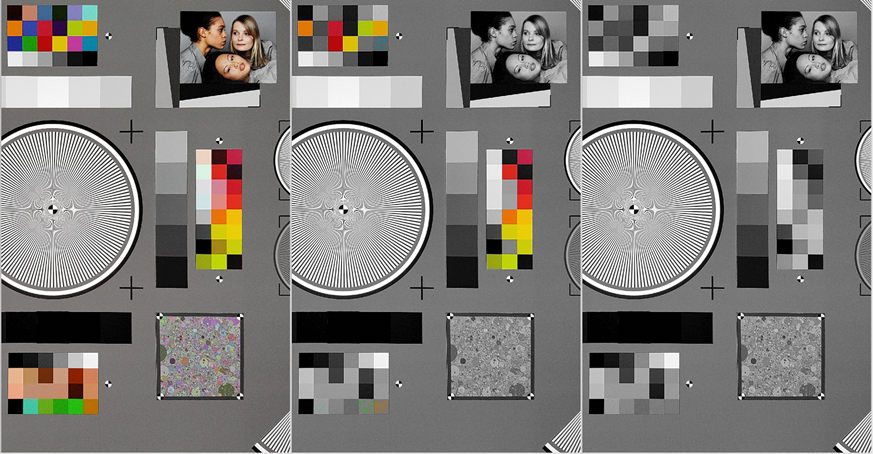

These examples illustrate the effects of adjusting specific CS parameter
values.
Example 1: Y weight parameters
Figure : When y_weight is 0.0 at all knee points, chroma suppression is fully affected
by the chroma thresholds

Example 2: Y weight parameters
A lower value of Y weight can increase chroma suppression
Figure : (L) y_weight = all 1.0f, suppression off; (C) y_weight = all 0.5f,
suppression affected by chroma thresholds; (R) y_weight = all 0.0f, suppression
totally dependent on chroma thresholds

Example 3: Y weight parameters
Suppression strength can be controlled by intensity (dark/highlight).
Figure : (L) y_weight = all 0.0f; (C) y_weight = 0.0f for dark area
only, brighter regions not suppressed; (R) y_weight = all 0.0f for highlight
area only, brighter regions more suppressed

Example 4: Chroma threshold parameters
Figure : (L oval) Weak suppression on the dark side; (R oval)Strong
suppression on the highlight side

Example 5: Chroma threshold parameters
Chroma is suppressed when threshold 1 increases. In this series, threshold 1 has
major increases while the difference between thresholds 1 and 2 remain the same.
Figure : (L) thr1 = 0 and thr2 = 2; (C) thr1 = 64 and thr2 = 66; (R)
thr1 = 126 and thr2 = 128

Example 6: Chroma threshold parameters
When the difference between thresholds 1 and 2 is larger, chroma is suppressed more
smoothly.
Figure : (L) thr1 = 64 and thr2 = 66; (C) thr1 = 64 and thr2 = 128;
(R) thr1 = 0 and thr2 = 128